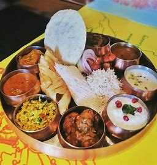
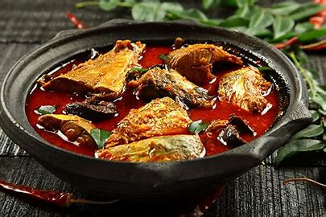

Mix Thali :
A traditional Assamese meal starts with a unique dish called khar (a curry of raw papaya, lentil and powdered dried skins).

Banana chips :
Banana chips are deep-fried, dried slices of banana that are coated in sugar or honey.
They are pale yellow, round slices and are often sold in bulk and eaten as snacks or sometimes used in baking.

Idli Dosa :
WebIdlis are soft pillowy moon-like cakes made of steamed rice and lentil. Millet and vegetables can be added to this simple recipe

Fish :
The Sea View restaurant in Kanyakumari is a very good restaurant for both veg and non veg food.